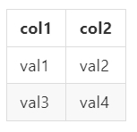

結構上有分為以下區塊
JQuery初始化語法
$(datatable_id).DataTable()
datatable_id對應為Table元件ID，以下面Table元件為例
<table id="test_table"></table>
在JQuery初始化語法呈現如下
$("#test_table").DataTable()
完整語法結構
$(datatable_id).DataTable(
// 屬性區塊,
// ajax區塊,
// 資料欄位區塊(columns),
// 語言區塊(language),
// 欄位元素定義區塊(columnDefs),
// 列元素區塊(rowCallback)
)
在Datatables歸類在Options內，可參考 https://datatables.net/reference/option/
屬性區塊在語法結構範例如下
“searching”: 是否開啟搜尋欄位，參數值有true/false。
“paging”: 設置是否要開啟分頁功能，參數值有true/false。
“sPaginationType”: 分頁功能呈現樣式，預設參數值”full_numbers” 關於官方說明可參考 https://datatables.net/reference/option/pagingType
“lengthMenu”: 設置顯示筆數下拉選單內，顯示可區分幾筆參數 預設參數值 [[10, 25, 50, -1], [10, 25, 50, “All”]]，代表要顯示10、25、50筆資料，其中 -1是告訴Datatables要關閉分頁欄位，因為是顯示全部資料，所以到這裡也可以發現它是跟”ALL”配對呼應的，只是要有一個開關去告訴Datatables要關閉分頁欄位，不然顯示全部資料那分頁就應該不需要存在才對。
“processing”: 當頁面剛載入時候，是否要顯示當前資料處理狀態資訊，參數值有true/false
“serverSide”: 設置是否透過Server端處理分頁、排序、過濾處理機制模式，也就是決定這三者功能是否給Server端處理好在回傳給前端顯示，或者，全都給Client端去做處理，參數值有true/false。 全都給Client端處理情況下，必須要注意資料量多寡問題，當資料筆數是非常龐大的時候，受限於電腦效能，如果電腦效能不太穩定可能會帶來不好的體驗，並且也要考慮到資料安全問題，因為必須要將全部資料回傳給Client端自己去做分頁、排序、過濾處理機制。 給予Server端處理情況下，透過ajax與指定API發送請求，透過特定關鍵字條件參數，告知後端要在特定條件參數值下，回傳符合的結果資料即可，不需回傳全部的資料給前端處理。
“stateSave”: 設置在頁面刷新時，是否要保存當前表格資料與狀態，不保存便會在刷新時回復到原始初始狀態，參數值有true/false。
“destroy”: 設置每一次Datatables有做修改時，是否銷毀當前暫存資料，參數值有true/false。
“info”: 設置是否要顯示Datatables基本資訊狀態欄，參數值有true/false。
“autoWidth”: 設置是否要自動調整表格寬度(自適應當前資料量設置表格寬度)，如果為false代表不要自適應，讓表格寬度遠永填滿當前所在區塊大小，參數值有true/false。
“ordering”: 設置是否要開啟欄位排序，如果為true情況下，可以點擊header欄位來進行當前資料排序，點哪一個欄位就是以該欄位作為排序依據，參數值有true/false。
“scrollCollapse”: 設置是否開始滾軸功能控制X、Y軸，參數值有true/false。
“scrollY”: 設置Y軸最大高度，如果有設置此選項就會開啟Y軸滾軸功能，假設為”200px”代表最大高度為200px，當資料筆數呈現高度超過此限制就會開啟滾軸功能。
“scrollX”: 設置X軸最大寬度，如果有設置此選項就會開啟X軸滾軸功能，假設為”500px”代表最大寬度為500px，當資料筆數呈現寬度超過此限制就會開啟滾軸功能。
“dom”: 設置各Datattables元件所處在位置， 可參考關於Datatables各元件位置設定(DOM positioning) https://datatables.net/examples/basic_init/dom.html
'<"top">rt<"bottom"><"clear">'
l - length changing input control
f - filtering input
t - The table!
i - Table information summary
p - pagination control
r - processing display element
可參考關於Datatables ajax： https://datatables.net/reference/option/ajax
標準語法結構如下：
基本參數：
url： 將請求發送給Server端API連結，字串型態。
type: 發送請求型態，一般都是用POST單純請求資料。
欄位宣告標準語法結構如下：
在Datatables中有幾個欄位就會有幾個”{data: ‘欄位名稱’}”，此用途是讓Datatables知道Server端回傳的資料中，哪個位置資料是給予哪一個欄位放置，Server端回傳的資料型態JSON格式，每一個位key值就是對應欄位名稱，value值就是該欄位要放置的資料。
假設有一筆Server端回傳的JSON資料為以下：
[
{'col1': 'val1' , 'col2': 'val2'},
{'col1': 'val3' , 'col2': 'val4'},
]
對應資料欄位區塊語法為以下：
columns: [
{ data: 'col1' },
{ data: 'col2' },
]
在Html Table元件語法結構如下：
<table class="display table-bordered table table-responsive table-hover">
<thead>
<th class="text-center">col1</th>
<th class="text-center">col2</th>
</thead>
</table>
最後Table呈現效果如下：

從這個例子中，你可以發現到資料欄位區塊(columns)內，不管有建立幾個欄位宣告，最後跟有幾筆(列)資料是無關的，它只跟有幾個欄位有關係，如果你建立的欄位宣告有缺少，或者不符合回傳的資料對應欄位key，會出現錯誤，需要注意這一點。
此區塊針對DataTables內各區塊所顯示資訊語言，可以自訂要呈現內容，例如當資料還在載入初始化時，可以自訂當前狀態敘述內容，或者分頁功能內按鈕名稱等等。
可參考關於Datatables option — columnDefs： https://datatables.net/reference/option/columnDefs
標準語法結構如下：
基本參數：
targets: 0
或者
targets: [0]
當有多個目標時，可以用以下宣告方式：
targets: [0,1,2,...]
當要指定全部欄位目標時，可以用以下宣告方式：
targets: '_all'
‘_all’ 代表全部欄位的意思。
例如：指定第一個欄位和第二個欄位內的值都套用置中對齊
{
targets: [0, 1],
className: 'text-center'
}
例如：將第三個欄位顯示的是時間，想要改變時間顯示格式為YYYY-MM-DD，時間格式套件設定採用momentjs，可參考 https://momentjs.com/
例如：要為第一個欄位加入css樣式，控制欄位寬度百分比
可參考關於Datatables rowCallback： https://datatables.net/reference/option/rowCallback
標準語法結構如下：
有關於function參數說明，請參考上方連結內說明。 最常使用的參數為以下：
data[欄位key值]
例如：有一個欄位名為’status’，要取出此欄位值用以下方是進型行：
data['status']
假設要為一整列套用一個背景色CSS樣式，使用BootStrap顏色類別名，在該列添加一個CSS類別為BootStrap顏色類別名’warning’，可以用以下方式：
Html
JQuery：